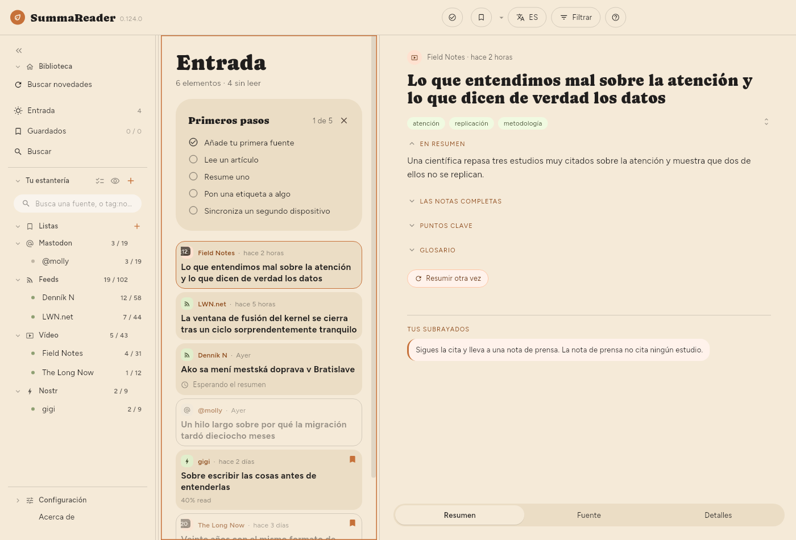

← La ventana · Contenido · Resúmenes →
Leer
Haz clic en un artículo o pulsa ↵. Según la ventana y la disposición elegida en Configuración › Básico › Apariencia › Disposición, se abre junto a la lista, encima o debajo de ella, u ocupa toda la ventana. En un teléfono siempre ocupa toda la pantalla.

Las tres pestañas
- Resumen: lo que escribió el modelo, en tres secciones plegables: En resumen (tres frases), Puntos clave (uno por tema, cada uno con un título y un par de frases que lo explican) y Glosario (los términos que le pareció útil definir). Los puntos de un vídeo llevan marcas de tiempo que saltan a ese momento.
Shift+1–3los pliegan. - Fuente: el propio artículo, o la transcripción.
- Detalles: de dónde vino, cuándo, qué modelo lo resumió y cuánto costó.
1–3 saltan de una a otra.
Los resúmenes escritos antes de que la aplicación dejara de pedirlas también llevan Las notas completas, una versión en prosa más larga. Ya nada las produce: lo que aportaban pasó a la visión general y a las explicaciones de cada tema.
La barra de herramientas
- Guardar: lo archiva en la lista que la estantería muestra rellena, que es Guardados hasta que elijas otra. El ▾ de al lado, un clic derecho o una pulsación larga eligen otra lista o crean una.
- Marcar leído: en artículos de un feed. Con el filtro de no leídos activado, te lleva al siguiente; el último cierra el lector.
- Eliminar: solo en artículos que has guardado. Pregunta dos veces, y la segunda pulsación dice ¿Eliminar en todas partes? porque quita el artículo de todos los dispositivos con los que sincronizas e impide que un feed lo vuelva a traer.
Pasar de un artículo a otro
Arrastra el artículo hacia un lado, o usa j / k. Arrastrar a la derecha en el primero vuelve a la lista. Los gestos se configuran en Configuración › Básico › Navegación › Gestos de deslizamiento.
Desplazamiento
Con el artículo activo, ↓ y ↑ lo mueven unas líneas de su texto, igual que un paso de la rueda del ratón sobre él. Cuántas líneas lo decide Configuración › Básico › Navegación › Desplazamiento › Desplazar: 1, 2, 3, 5 u 8, y 3 al principio. El paso sigue el tamaño del texto y el interlineado, así que son las mismas líneas con cualquier ajuste. Un panel táctil conserva su propio movimiento fino.
Av Pág y Re Pág mueven nueve décimas de pantalla, de modo que las últimas líneas leídas quedan arriba en la pantalla siguiente. Inicio y Fin van al principio y al final.
Estos movimientos se deslizan hasta el nuevo lugar en vez de saltar. Configuración › Básico › Navegación › Desplazamiento › Desplazamiento suave lo desactiva. También está desactivado cuando el sistema pide reducir el movimiento.
Cuando no hay texto
No todos los artículos llegan con su texto. El lector dice cuál de estos casos es:
| Dice | Qué pasó |
|---|---|
| Este vídeo no tiene subtítulos | No hay transcripción que leer |
| YouTube pidió a la aplicación que fuera más despacio | YouTube rechazó los subtítulos por ahora |
| La página llegó, pero no tenía ningún artículo | La página construye su texto en el navegador |
| El sitio mostró una comprobación antirrobots | Una página de «demuestra que eres humano» |
| Tras un muro de suscripción | Lo que llegó fue la oferta |
| La página ya no existe | Se retiró o se movió |
| No está en este dispositivo | Lo tiene otro dispositivo, o nadie lo ha descargado |
Las comprobaciones posteriores vuelven a intentar por sí solas, unas cuantas veces, el caso de ir más despacio. De los demás, solo vale la pena reintentar el último, y Obtener el texto hace eso.